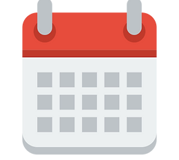

Sommaire
- Qu'est ce que le 4L Trophy?
- La 4L
- Notre équipe
- Le parcours
- Le planning
- Nous sponsoriser
- Budget prévisionnel

1. Le 4L Trophy
Le 4L Trophy a été fondé par Jean-Jacques Rey en 1997. Jean-Jacques Rey a participé au Paris-Dakar en 1996 avec des amis ; c’est après cette expérience qu’il a eu l’idée de rendre accessible les raids motorisés au grand public. Il a commencé à faire cela par le biais de l’agence de voyage Désertour, qu’il a fondé.
Quand ils étaient plus jeunes, Jean-Jacques Rey et ses amis évoquaient leur désir de découvrir le désert. C’est ainsi que lui est venue l’idée : trouver une voiture abordable et capable de traverser le désert, afin d’initier un nouveau rallye-raid. La Renault 4L s’est rapidement présentée comme une très bonne candidate : légère, peu coûteuse et fiable.
C’est pourquoi, dès son retour du Paris Dakar, Jean-Jacques Rey se lance dans une expédition au Maroc en Renault 4L afin d’étudier la faisabilité du projet.
Le 4L Trophy a la particularité d’être un Raid réservé aux personnes ayant entre 18 et 28 ans. Il ne peut (évidemment) se faire qu’en Renault 4L.
Lors de la première édition, seulement 3 voitures ont passé la ligne de départ. Ce chiffre n’a fait qu’augmenter pour atteindre la barre du millier de voiture en 2008. Le record de participants a été atteint en 2017, lors de la 20ème édition, avec plus de 1450 voitures partant à l’aventure !
Une action humanitaire
L’aspect humanitaire est essentiel : chaque année le 4L Trophy agit en collaboration avec l’association Enfants du Désert, afin de donner accès à une meilleure éducation à des enfants Marocains.
Ainsi, les équipages transportent du matériel scolaire et sportif, pour distribution.
Au-delà des actions menées par chaque équipage, les sponsors du 4L Trophy (comme Norauto et Deloitte) participent de façon globale.
La médiatisation du 4L Trophy
Le 4L Trophy est un événement très médiatisé, au niveau national comme international.
Chaque année, ce raid devient un sujet d’actualité pour de nombreux médias traditionnels. Radio, télévision, journaux : des dizaines de reportages sont réalisés.
Cet impact ne se limite pas aux médias traditionnels, car le 4L Trophy est aussi très représenté sur les réseaux sociaux. Sur Instagram, cet événement génère des millions de likes et des centaines de milliers d’abonnements.
Sur YouTube par exemple, de nombreuses vidéos ont été réalisées, avec un fort impact.
Au total, nous parlons de plusieurs millions de vues, rien qu’avec les vidéos de Youtubers Francophones connus :
- Amixem et CYRILmp4 en 2017, réalisant une mini-série de 6 épisodes, accumulant entre 2 et 4,5 millions de vues chacun.
- Lolywood avec plus d’un million de vues,
- Valouzz avec plus de 600k vues.
- Dobby avec environ 350k vues.
2. La renault 4
La Renault R4 est présentée en public pour la première fois le 21 septembre 1961 à Francfort, au salon international de l’automobile. Elle est tout de suite surnommée 4L.
Cette voiture est révolutionnaire pour différentes raisons : elle est modulable, résistante, abordable et offre un volume d’espace intérieur très important pour son gabarit. La voiture avait même pour réputation d’être indestructible !
 Cette grande polyvalence aura séduit le grand public : en 31 ans, plus de 8 millions d’exemplaires ont été produits.
Cette grande polyvalence aura séduit le grand public : en 31 ans, plus de 8 millions d’exemplaires ont été produits.
À la suite de la présentation de 1961, la voiture n’a fait qu’évoluer en différents modèles : R4, R4 L, R4 L Super Confort, R4 Sinpar. Chaque modèle est plus ou moins puissant, confortable, luxueux. La gamme couvre une majorité des demandes, de la voiture familiale bon marché, au fourgon spacieux.
Plusieurs 4L ont participé avec bravoure au Paris-Dakar et à de nombreux autres rallyes automobiles preuve de la résistance du véhicule.
3. L'équipe
Mattéo EDOUART
18 ans - Pilote
Étudiant en première année à l’IESEG
Depuis que l’idée du 4L Trophy nous est venue en tête, c’est le sujet qui revient et qui fait office de fil rouge dans toutes nos discussions. C’est ce qui m’a permis de réaliser l’importance de ce défi pour chacun de nous deux. Nous sommes tous les deux animés d’une grande passion pour l’automobile qui nous donne de l’ambition. Notre motivation vient également de l’association du défi sportif qui nous permettra de nous dépasser, et de l’action humanitaire menée conjointement avec notamment Enfants du Désert.
Passionné par l’exploration et la nature, j’ai été scout pendant 10 ans. Je bricole beaucoup ; j’aime réparer et créer de petits objets.
Pour finir, conduire la voiture avec laquelle mes parents ont passé leur permis - la Renault 4L - m’inspire. Et aujourd’hui, je n’attends plus que le jour du départ !
Fabien IONESCU
18 ans - Co-Pilote
Le 4L Trophy est un objectif important pour Mattéo et moi. Afin de l’atteindre, nous allons faire face à de nombreux défis. De fait, ce “rally-raid” de plus de 6500 kilomètres est une expérience non seulement enrichissante, mais aussi très éprouvante.
Son caractère humanitaire, lié à notre passion commune pour l’automobile, en font l’événement parfait pour nous deux : aventuriers avides !
Passionné par tous les engins mécaniques qui se déplacent depuis mon plus jeune âge (avions, trains, bateaux, voitures...), j’ai appris à connaître les quelques bases du fonctionnement d’un moteur en observant mon père “bricoler” une bonne vieille Citroën 2CV.
Savoir aujourd’hui que nous allons devoir aller au bout de cette aventure au volant d’une Renault 4, cette petite voiture française devenue mythique, est encore plus excitant !
4. Le parcours du 4L Trophy
 L’aventure commence le 16 février à Biarritz, le « village départ ». Les voitures sont inspectées (châssis, roues, moteur...). Les permis, passeports et assurances des participants sont passés en revue. Dernière étape avant le grand départ : la visite médicale obligatoire.
L’aventure commence le 16 février à Biarritz, le « village départ ». Les voitures sont inspectées (châssis, roues, moteur...). Les permis, passeports et assurances des participants sont passés en revue. Dernière étape avant le grand départ : la visite médicale obligatoire.
L’étape suivante se fait à Algéciras où nous prendrons le bateau pour aller au Maroc.
Du 20 au 24 février, nous suivrons les 6 étapes prévues dans le désert marocain.
Le 25 février, après des heures de conduite, deux jours d’autonomie et des paysages magnifiques : c’est l’arrivée à Marrakech. C’est ici qu’auront lieu la soirée de clôture et la remise des prix.
5. Le planning
-

- Janvier 2022 - Mars 2022 - Montage du dossier - Pré-inscription
- Avril 2022 - Juin 2022 - Recherche de sponsors - Recherche d’une 4L
- Juillet 2022 - Septembre 2022 - Préparation de la voiture - Découverte et essais de la 4L
- Octobre 2022 - 15 février 2023 - Retour aux études en attente du départ
- 15 février 2023 - Départ de Biarritz
- 26 février 2023 - Retour en France
6. Nous sponsoriser
Nous avons besoin de votre aide pour participer à cette aventure. C’est pourquoi nous acceptons les partenariats dans des formes variées.

Partenariat en fourniture de matériel ou aide :
Une aide directe : vous avez différentes manières de nous aider !
Par exemple en nous offrant un service (aide à la préparation de la voiture), ou du matériel (mécanique pour la voiture, scolaire, sportif, matériel de camping…).
Pour faire simple : tout ce qui peut nous être utile afin de réaliser le raid dans de bonnes conditions.
Cette aide représente beaucoup pour nous, elle est essentielle.
Partenariat financier :
Vous pouvez nous aider financièrement ; un encart publicitaire sera affiché sur la voiture (logo ou nom de l’entreprise. Voir paterne dans 2 pages).
Cette aide financière nous est indispensable : elle nous permettra de prendre en charge le coût de l’inscription, de l’achat de la voiture, de sa préparation, etc…
Dons, mécénat :
Il est également possible pour vous de nous aider au travers de dons. Selon la loi, les dons que vous versez à une association d’utilité publique vous donnent droit à une réduction d’impôt de 66% du montant de votre don.
Quels avanatages?
- Profiter d’une large médiatisation ainsi que d’une importante visibilité :
Le logo (ou tout autre support visuel choisi par le sponsor) sera affiché sur la voiture, visible par tous les participants, et sur les réseaux sociaux et de communication utilisés par les équipes du 4L Trophy.
Cela se fera pas le biais des médias présents sur place (L’Étudiant, LeParisien, NRJ, TF1…), ou par nos propres moyens de communication (Instagram, vidéos, photos). - Possibilité d’utiliser la voiture en exposition lors de l’un de vos événements.
- Association de votre marque ou entreprise à une équipe de jeunes volontaires et dévoués.
- S’associer à l’image forte et solidaire du 4L Trophy, tout en aidant des étudiants et des jeunes au Maroc.
Cette publicité est abordable et originale.
7. Budget prévisionnel
- Voiture
- Consommables avant le Raid
- Consommables pendant le Raid
- Inscription
- Autres